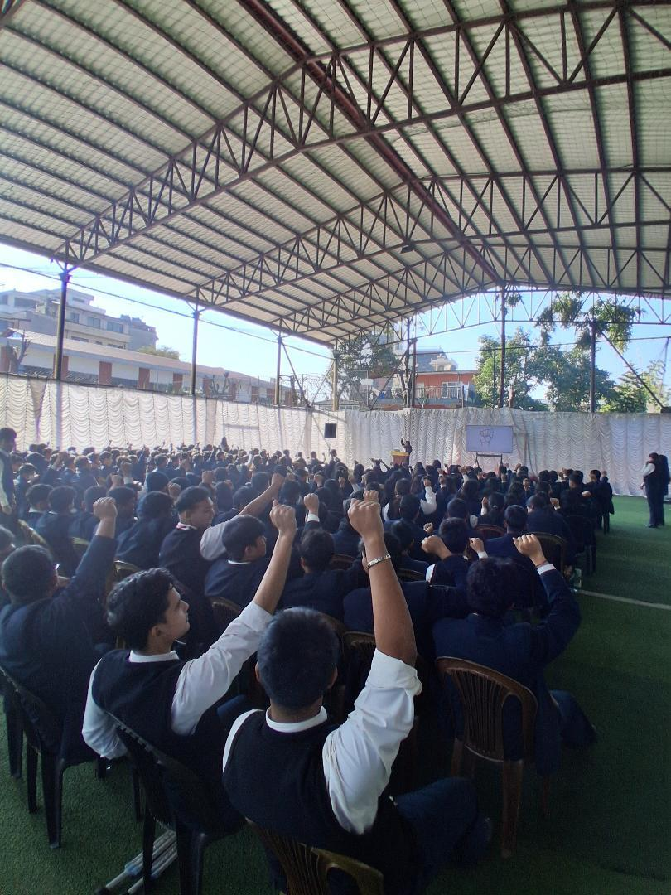

Session 03 / shared language
Words for daily life
Useful signs for school, home, and community, practiced slowly and together.

This is proxy text for a future session report. Our third institution visit centered on words people use every day and the confidence that grows through repetition.
Small groups built their own mini-dictionaries and taught one another a favorite sign. Real notes and images from the session will be added here later.